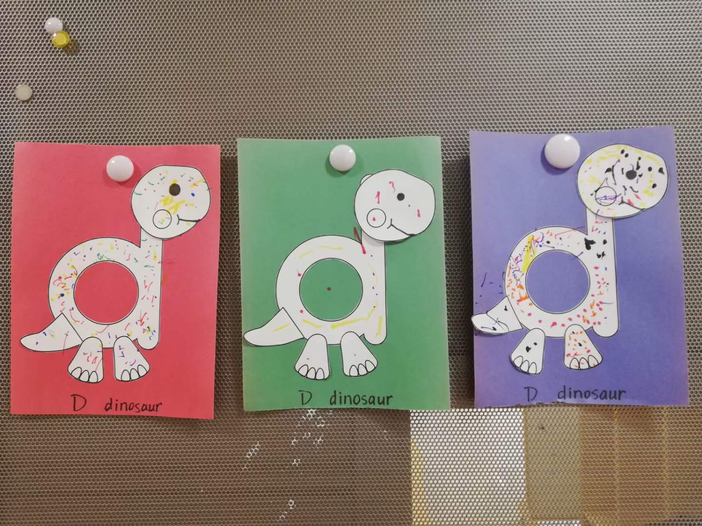
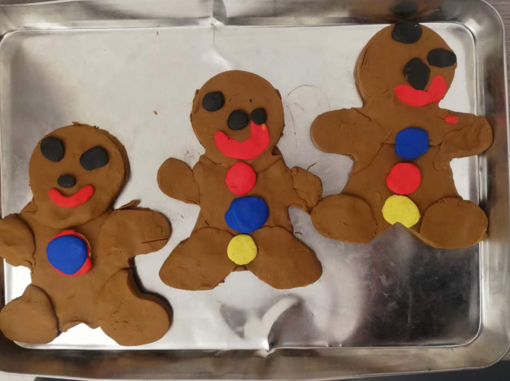

。Clinical Resources
<< Kindergarten small group activities
I led weekly activities of small groups of 6-9 children in kindergarten. Children in the class had diverse needs in language and speech. The activities were to promote social communication skills and facilitate the development of language (e.g., vocabulary of concepts, morphosyntactic skills), speech sounds, and early literacy skills (e.g., phonics).
During the group activities, I often needed to facilitate appropriate social skills (e.g., turn-taking, respecting personal space). Meanwhile, I thrived to provide equal opportunity of participation, including for children with severer communication difficulties and children who used an AAC device. It was especially important to design activities that met the children's interest and keep them engaged through the 12-minute activity time.
For example, this is an activity for the children to practice letter "Dd" and its corresponding speech sound /d/. After introducing the letter and sound, I presented the children with a printed letter "d" and told them I would make a dinosaur with it. The visuals were adapted from this pinterest project. As I added the pieces to the dinosaur body ("d"), we named the body parts together. I told them that we still needed to put some "dots" on the dinosaur and that "dot" starts with the /d/ sound and the letter "d." Children were invited to each choose a color of marker by saying "I want ____ (color)." They then come together to put dots on the dinosaur's body while saying "dot." All 3 groups got to present their dinosaurs in the hallway for the week.

Before the winter holidays, I led an activity about gingerbread men. This activity was to practice the vocabulary of colors, shapes, and body parts, and facilitate the concept of sentences. We first read the "Gingerbread Man" book together, and then we made gingerbread men with clay as a group. We talked about the colors and shapes of the gingerbread man's body parts. The students took turns to each put a piece on the baking tray and name the body part. After making it, the students took turns to make a sentence about the gingerbread man, e.g., "He has big eyes." "He is happy." Here are the gingerbread men made by the children.

Should you have any questions regarding this activity, please feel free to contact me.